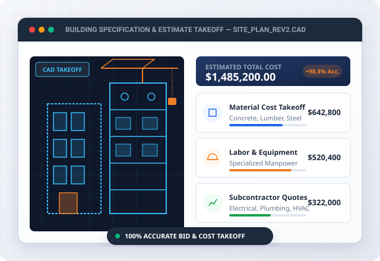

Construction estimating services provide detailed cost projections before construction begins. Professional estimates measure materials, labor, equipment, subcontractor work, and applicable project expenses. Construction estimating services support bidding, budgeting, procurement, feasibility analysis, and financial planning across residential, commercial, industrial, and civil construction.

Direct feedback from contractors and project owners on estimate accuracy, turnaround time, and responsiveness during the bidding process.
The quantity takeoff came back within two days and lined up closely with our actual site numbers for the residential addition.
Residential Addition
Extremely detailed commercial cost breakdown. Helped us win our $3.2M office renovation bid with total budget clarity.
Commercial Renovation
Spot-on MEP and structural takeoff sheets. Delivered 12 hours ahead of our bid deadline with thorough material lists.
Multi-Family Development
Highly reliable estimating partner. Their preliminary budget models saved our design team from costly late-stage revisions.
Institutional Facility
Fast turnaround and super accurate RSMeans regional pricing. We submit all our subcontractor trade bids using their numbers.
General Contracting
Professional bid management support. Their itemized spreadsheets made client approvals smooth and straightforward.
Industrial Warehouse
Construction estimating services cover project costing, quantity measurement, bidding support, and trade-specific pricing. Each service addresses a different stage of construction planning and supports accurate financial preparation.
Construction cost estimating services calculate the expected financial requirements for a complete construction project. Estimates account for labor, materials, equipment, subcontractor work, site expenses, overhead, and applicable project costs.
Quantity takeoff services measure construction components from drawings and project documents. The process converts plans into measurable quantities for concrete, steel, lumber, finishes, fixtures, earthwork, and other construction materials.
Material takeoff services identify and quantify materials required for construction. Takeoffs organize quantities for purchasing, budgeting, bidding, and project planning.
Bid estimating services prepare project costs for contractors and subcontractors competing for construction work. Estimators review plans, measure quantities, apply labor and material rates, and organize costs into a bid-ready format.
Residential construction estimating covers homes, additions, renovations, extensions, and other housing projects. Estimates account for material quantities, labor requirements, equipment, subcontractor scopes, and project-specific expenses.
Commercial construction estimating covers offices, retail buildings, restaurants, schools, medical facilities, and other commercial developments. Estimates organize costs across architectural, structural, mechanical, electrical, plumbing, interior, and site-related scopes.
Industrial construction estimating covers warehouses, manufacturing facilities, processing buildings, distribution centers, and related developments. Estimates account for structural systems, equipment, utilities, mechanical systems, electrical installations, sitework, and specialized construction requirements.
MEP estimating services cover mechanical, electrical, and plumbing construction costs. Estimators quantify equipment, fixtures, piping, ductwork, wiring, controls, fittings, and associated installation requirements.
Construction estimating services provide greater value when accuracy, experience, regional pricing, and organized deliverables work together. A structured estimating process gives contractors and project owners clearer cost information before financial commitments are made.
Detailed quantity measurement and cost classification create a clearer project cost picture.
Professional estimators interpret drawings, specifications, schedules, and trade requirements.
Regional labour rates, supplier pricing, transportation expenses, and market conditions influence construction costs.
Organised estimates provide quantities, unit costs, extensions, and trade breakdowns in a format suited to bidding and project review.
Construction estimating follows a structured workflow from document submission through final estimate delivery. Each stage converts project information into measurable quantities, applicable pricing, and an organized cost report.
Submit project drawings, specifications, schedules, scope documents, and relevant project information. Include architectural, structural, civil, mechanical, electrical, and plumbing documents when applicable.
Review the submitted drawings and specifications to establish project scope and estimating requirements. The review identifies building areas, construction systems, trade divisions, project phases, and relevant details.
Complete quantity takeoffs by measuring materials and construction components from the project documents. Apply labor rates, material prices, equipment costs, subcontractor pricing, and applicable project expenses to the measured quantities.
Review the completed estimate for quantity accuracy, pricing consistency, scope coverage, and calculation errors. Quality control provides a final opportunity to identify missing work, duplicated quantities, or inconsistent rates.
Construction estimating services support professionals who need reliable cost information before bidding, purchasing, development, or construction. Contractors and project stakeholders use estimates to establish budgets and evaluate project financial requirements.
General contractors use construction estimating services to prepare competitive project bids. Detailed estimates help establish material, labor, equipment, subcontractor, and overhead costs before submitting the proposal.
Subcontractors use estimating services for trade-specific quantity takeoffs and bid preparation. Electrical, plumbing, mechanical, concrete, framing, roofing, flooring, and other trades require focused measurements for accurate proposals.
Home builders and remodelers use estimating services to develop residential budgets before construction begins. Estimates are available for new homes, additions, renovations, kitchen projects, bathroom upgrades, and larger remodeling projects.
Developers and property owners use estimating services for feasibility studies, budgeting, financing preparation, and project cost planning. Early cost information helps evaluate whether a proposed development aligns with available financial resources.
Construction estimating services cover a broad range of project categories, from new buildings to renovations and infrastructure work. Project-specific estimating accounts for the construction methods, trades, quantities, and site requirements involved.
New construction estimates cover ground-up residential, commercial, industrial, and mixed-use developments. Estimators quantify building materials, labor, equipment, subcontractor work, sitework, and associated construction expenses.
Renovation and remodeling estimates cover additions, alterations, upgrades, interior changes, and building improvements. Estimators separate existing conditions from proposed work when project documents provide sufficient information.
Multifamily estimating covers apartments, condominiums, townhomes, student housing, and similar residential developments. Estimates organize repeated unit layouts alongside shared spaces, sitework, utilities, and building systems.
Civil and infrastructure estimating covers sitework, excavation, utilities, roads, grading, drainage, paving, and related construction. Estimates measure earthwork quantities, utility components, aggregate, concrete, asphalt, equipment, and labor.
A construction estimate includes measured quantities and costs for the project scopes identified within the available drawings and specifications. Deliverables can include material quantities, labor costs, equipment expenses, subcontractor pricing, and trade-level cost breakdowns.
Material quantities and takeoffs identify measurable construction components required for the project. Quantities can cover concrete, steel, lumber, masonry, finishes, fixtures, piping, ductwork, electrical components, and other specified materials.
Labor, materials, and equipment costs are the primary direct cost components in a construction estimate. Labor reflects installation requirements, material costs reflect required products, and equipment costs reflect machinery or specialized tools needed for construction.
Trade-by-trade cost breakdowns organize project expenses according to construction discipline or division. Common divisions include concrete, masonry, metals, finishes, electrical, plumbing, mechanical, and sitework.
A construction estimate combines measured quantities with applicable unit costs, then adds project-level expenses. A sample $1,000,000 project demonstrates how major cost categories contribute to the estimated construction budget.
A sample construction cost estimate is shown in the table below. It demonstrates how major cost categories contribute to an estimated construction budget.
A sample construction cost estimate is shown in the table below.
| Cost Category | Sample Amount | What It Covers |
|---|---|---|
| $350,000 | Raw materials, fixtures, and finishes used to build out the project | |
| $250,000 | Wages for the crews and skilled trades who carry out the work | |
| $75,000 | Rental, fuel, and use of machinery and tools needed on site | |
| $200,000 | Specialized trade work performed by subcontractors on the project | |
| $75,000 | Project management, permits, insurance, and administrative costs | |
| $50,000 | Contingency, site preparation, or other project-specific items | |
| Estimated Project Cost | $1,000,000 | Total combined construction project estimate |
Materials + Labor + Equipment + Subcontractor Work + Overhead + Other Applicable Costs = Estimated Project Cost
The calculation begins by adding materials, labor, equipment, subcontractor work, overhead, and other applicable costs. The sample figures produce a total estimated project cost of $1,000,000.
Actual construction costs depend on project size, scope, location, specifications, labor rates, material prices, equipment requirements, and subcontractor pricing. A professional estimate replaces sample figures with project-specific quantities and current applicable rates.
Actual construction costs depend on project size, scope, location, specifications, labor rates, material prices, equipment requirements, and subcontractor pricing. A professional estimate replaces sample figures with project-specific quantities and current applicable rates.
Factors affecting construction estimates:
Construction estimating projects demonstrate how estimating services apply across different building categories and project scopes. Representative examples include residential, commercial, industrial, and civil work.
Project type: Residential construction
A residential construction estimate can cover a new home with structural, architectural, mechanical, electrical, plumbing, and finish scopes. The estimate separates material quantities, labor requirements, equipment, subcontractor work, and applicable overhead.
Demonstrates how architectural and structural drawings can be measured to produce a construction cost estimate covering the full scope of a residential build, from foundation through finishes.
Project type: Commercial construction
A commercial construction estimate can cover an office building with sitework, structural work, interiors, mechanical systems, electrical installations, and plumbing. Trade-level pricing creates a detailed financial structure for the proposed development.
Demonstrates how commercial construction plans can be reviewed, quantities measured, and a construction cost breakdown organized by applicable trades or CSI divisions.
Project type: Industrial or civil construction
An industrial or civil construction estimate can cover a warehouse, a manufacturing facility, a utility project, a road improvement, or a large site development. The estimate requires detailed quantities for structural work, equipment, utilities, earthwork, paving, and related construction.
Demonstrates how larger or more complex construction scopes, such as excavation, utilities, or infrastructure work, can be broken down into measurable quantities and organized cost categories.
Explore detailed guides, cost calculation methodologies, estimator workflows, and pricing insights organized category by category.
Construction estimating is the process of calculating the expected cost of a construction project from drawings, specifications, quantities, rates, and project requirements. Estimating converts construction scope into a structured financial projection for bidding, budgeting, planning, and procurement.
The purpose of construction estimating is to establish an informed projection of project costs before construction begins. Contractors use estimates for bid preparation, while owners and developers use estimates for budgeting and feasibility analysis. Estimating provides a financial reference for procurement, subcontractor coordination, financing discussions, and project planning. A detailed cost breakdown further identifies the expenses associated with individual construction trades and project components.
Construction estimating works by converting project documents into quantities and assigning applicable costs to each measured item. Estimators first review drawings and specifications before completing quantity takeoffs and applying labor, material, equipment, and subcontractor rates. The resulting costs are organized into trade categories and project-level expenses. Quality review then checks quantities, calculations, scope coverage, and pricing before the completed estimate is sent to the client.
Construction costs are affected by several connected project conditions that influence quantities, rates, and total expenditure.
The factors affecting construction costs are listed below.
Calculate the construction project cost by following these four steps. First, review drawings and specifications to establish the complete project scope.
Estimate construction costs by following these four steps. First, organize drawings and specifications according to the trade or construction division. Second, measure quantities for materials, labor activities, equipment requirements, and subcontractor scopes. Third, assign applicable unit prices and calculate each cost extension. Lastly, combine direct and indirect expenses into the project estimate. Project location influences labor and material rates, while project complexity affects labor requirements and construction methods. A complete estimate requires project-specific information rather than reliance on generic cost figures.
Determine construction site costs by following these four steps. First, review the requirements for grading, excavation, utilities, access, drainage, temporary facilities, and site preparation. Second, quantify earthwork, paving, concrete, utilities, and related materials. Third, apply labor, equipment, transportation, and subcontractor rates. Lastly, include applicable site overhead and temporary construction expenses. Site costs vary according to terrain, soil conditions, access, project size, utility requirements, and local construction conditions. Detailed civil and sitework documents provide a stronger foundation for site cost calculations.
A construction cost estimate includes the major expenses required to complete the defined project scope.
The inclusions of a construction cost estimate are listed below.
A construction cost estimator reviews project documents, measures construction quantities, researches applicable pricing, and prepares an organized projection of project costs.
A construction estimator should be hired when a project requires detailed cost information before bidding, budgeting, procurement, financing, or construction. Early estimating provides financial visibility before major project commitments are made. General contractors benefit from estimating support during competitive bidding, while developers benefit during feasibility and budget planning. Home builders and remodelers can use estimating support when the project scope includes numerous trades, materials, or design variables. A structured cost analysis is provided by a professional Construction Estimator when internal estimating resources are limited.
Construction estimators calculate costs by combining measured quantities with applicable unit prices and project expenses by following these four steps. First, review the drawings, specifications, schedules, and scope documents. Second, measure materials and construction activities within each trade. Third, apply labor, material, equipment, and subcontractor rates to the measured quantities. Lastly, add applicable overhead and other project costs before reviewing the final calculation. Estimators organize the resulting figures into trade divisions and cost categories. Quality control then checks quantities, rates, calculations, and scope coverage before final delivery.
A construction estimator needs project documents that describe the proposed scope, design, materials, dimensions, and construction requirements.
The information that a construction estimator needs is listed below.
Construction estimates are highly accurate when project documents are complete, quantities are measured carefully, applicable pricing is used, and the scope is clearly defined. The estimated accuracy depends on the quality of the available information and the conditions surrounding the proposed construction.
A construction estimate takes time that depends on project size, document quality, scope complexity, number of trades, and the required level of detail. A small residential project requires less estimating work than a large commercial or industrial development. Document completeness directly affects progress estimates. Detailed drawings and clear specifications reduce the need for clarification during quantity takeoff. Complex projects require additional time for trade coordination, quantity measurement, pricing, quality review, and final report preparation.
Construction estimating services cost different amounts according to project size, scope, complexity, document quality, trade coverage, and required deliverables. Estimating providers can price services through a fixed project fee, an hourly arrangement, a percentage-based structure, or another agreed pricing method. A residential quantity takeoff requires a different level of work from a complete commercial estimate covering multiple trades. Pricing also changes when revisions, alternate estimates, rush delivery, or additional project documents are required. A clear project scope allows an estimating provider to establish an appropriate service price before work begins.
You can reduce errors in a construction estimate by following these four steps. First, verify the latest drawings and specifications before starting the takeoff. Second, organize quantities by trade and construction division. Third, check unit costs and calculation extensions against the applicable project market. Lastly, review the completed estimate for omissions, duplicates, scope gaps, and inconsistent pricing. Clear documentation reduces confusion when project information changes during the estimating process. A structured review process further improves consistency between measured quantities, applied rates, and final project costs.